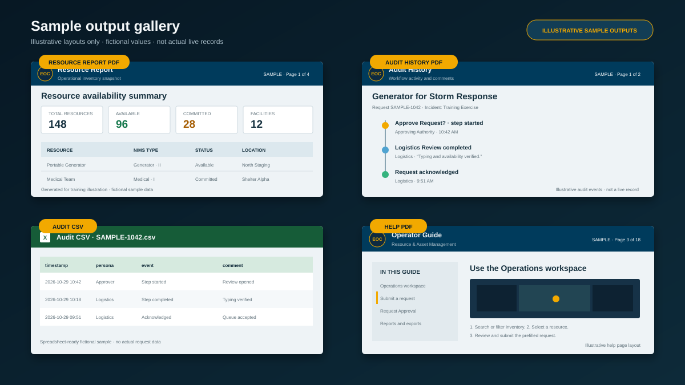

Agency branding and logo
HTTPS URL or PNG, JPEG, GIF, or WebP. Maximum upload size: 300 KB.
Application labels
Theme colors
Resource status colors
Operator defaults
Data connections and layers
Workflow Manager
Workflow identifiers are deployment-controlled and read-only to prevent accidental request/job corruption.
Deployment diagnostics
- Status
- Loading deployment configuration…
About Resource & Asset Management
This authenticated application combines a NIMS-typed resource inventory, facility inventory, operational map, ICS 213RR-style requests, and an ArcGIS Workflow Manager approval lifecycle.
Systems of record: The secured ArcGIS feature service stores resources, facilities, and request records. The Web Map controls operational symbology, labels, visibility ranges, pop-ups, and legend content. Workflow Manager is authoritative for each request's current step, assignment, and audit trail.
Use the Operations workspace

Header buttons
- The compact Reports group contains two downloads. Resource Report creates the full mapped report with supporting detail, definitions, locations, availability, and update dates. Resource Summary creates a shorter mapped briefing with staging-area, kind, and NIMS-type totals.
- Request Queue opens the read-only request drawer. The badge is the loaded request count; close the drawer with its X button or backdrop.
- Request Approval opens the workflow-authoritative approval workspace.
- Sign in / Sign out starts or ends the ArcGIS portal session. The cog opens Settings & Help.
Resources, Facilities, and map controls
- Resources and Facilities switch inventories. Search Resources and expand Filters to limit by status, NIMS category, kind, or type; Clear filters removes checked resource filters.
- Search Facilities by name, type, or location and use Facility status to show Open, Standby, Limited Operations, Full, Evacuating, Closed, Out of Service, or any additional status found in the data.
- Select a Resource or Facility to highlight it and center the map at the configured selection scale. A Resource also opens the request form.
- Use Home to restore extent, Layers to change visibility, Basemap to change context, Bookmarks for saved extents, and Legend to interpret symbols and movement paths.
- The command strip reports system status, resource and facility totals, availability, and last refresh time.
Request-pane buttons
- The pane X and Cancel clear the current resource selection and return the form to its empty state.
- Submit Asset Request validates the form, shows submission progress, creates the request and Workflow Manager job, and confirms their verified link.
Submit an inventory request
- Sign in from the Operations workspace.
- On the Resources tab, select the resource to request. The map highlights and zooms to it, and the right-side request pane opens.
- Review the selected asset summary and prefilled category, kind, type, quantity, requestor, and current location.
- Enter the request title, incident, priority, quantity, date needed, and operational notes or justification.
- Select Submit Asset Request. The app creates the request record, creates or reuses exactly one Workflow Manager job, verifies the request GlobalID correlation, writes the WFMJobId back to the request, and verifies the link.
- Wait for the final linked-success message. A request is workflow-ready only when IntegrationState = Linked and WFMJobId contains a job ID.
Important: If any workflow operation fails, the request retains its Integration State and Integration Error for troubleshooting. Do not process an unlinked request as if it were approved.
Use the Request Approval workspace

Queue and detail buttons
- Refresh queue reloads requests and live workflow state. Search and filters narrow the queue; the arrow beside Authorized Persona toggles newest-first and oldest-first order.
- Select a request card to verify its job link and load the timeline. Incident information & audit history shows request fields and events; Resource movement map shows the resource, facilities, and curved origin-to-destination movement paths.
- Export CSV downloads request metadata and audit events. Export PDF downloads the branded audit report with the movement map.
Workflow and location buttons
- Actions stay disabled until WFMJobId, IntegrationState, request GlobalID correlation, and the live step are verified.
- For movement steps, choose an active facility or enter a site, address, or coordinates. Locate address geocodes the address or reverse-geocodes coordinates. Use home/staging location restores the resource's recorded home location for return.
- Choose an available action, enter the required note, and select Complete selected action. The app writes Workflow Manager first and verifies any associated resource movement.
- Contact requestor opens a prepared email containing request details and the signed-in user's signature.
- Operations Map returns to inventory; Sign in / Sign out changes the portal session; the cog opens Settings & Help.
Follow the Workflow Manager lifecycle
Approved branch
- Request Submitted — Logistics: acknowledge and route the request.
- Logistics Review — Logistics: validate NIMS typing, quantity, priority, incident, and availability.
- Approve Request? — Approving Authority: approve or deny with a required note.
- Source / Commit Resource — Logistics: select and commit the resource.
- Notify Ready to Deploy — Logistics: send the ready-to-deploy notification.
- Mobilize / Dispatch — Logistics: dispatch the committed resource.
- Deploy / In Use — Operations: confirm deployment and operational use.
- Ready to Return? — Operations: choose Ready or Remain Deployed. Remain Deployed returns the job to Deploy / In Use.
- Demobilize — Operations: coordinate demobilization and return.
- Return & Restock — Logistics: inspect, return, and restock the resource.
- Notify Resource Returned — Logistics: send the returned-resource notification.
- Request Closed — Workflow Administrator: acknowledge final closeout.
Denied branch
- Record Denial — Approving Authority: record the denial reason.
- Notify Request Denied — Approving Authority: send the denial notification.
- Resubmit Request? — Requestor: choose Resubmit to return to Logistics Review, or Close to proceed to Request Closed.
Reports, exports, and samples

Resource Report PDF
- From Operations, select Resource Report. The button becomes available after resource data loads and shows Building Report while the file is prepared.
- The PDF contains a current map plus hub, resource-kind, and NIMS category/kind/type totals. Use it for inventory briefings and staging summaries.
Audit History exports
- Select a request in Request Approval, then choose Export CSV for spreadsheet-ready request metadata and Workflow Manager audit events.
- Choose Export PDF for a paginated audit report with the selected request, movement map, Workflow Manager history, comments, responsible persona when available, page numbers, and generation details.
Help PDF
- From Help & How-to, select Download help PDF to create this complete, paginated operator guide with the current interface illustrations and report samples.
- PDF reports use the configured application name, subtitle, colors, and agency logo. If the agency logo is unavailable, the EOC mark is used. Downloads are created directly without a popup or print dialog.
Configure Settings and Help

Settings and Configuration actions
- Open this page with the cog beside Sign in or Sign out. Settings contains branding, interface labels, theme and status colors, and operator defaults.
- Preview logo previews the HTTPS URL currently entered; choosing an upload previews the local image. Use default logo clears the custom choice and restores the EOC mark after saving.
- Configuration reviews or overrides portal, OAuth client, Web Map, feature service, layer indexes, selection zoom scale, and layer visibility. Workflow identifiers are deployment-controlled and read-only.
- Save & reload validates and stores browser-local overrides, then reloads the page. Reset to defaults removes all local overrides and reloads deployment values.
Help actions
- Help & How-to hides Save and Reset because viewing help does not modify configuration. Select an index link to open its matching expandable topic.
- Download help PDF creates a branded operator guide containing every topic, the latest interface illustrations, and report samples.
- The configured branding applies throughout the app and to Resource Report, Audit History, and Help PDFs.
Troubleshooting
Sign-in does not complete
Verify the portal URL, OAuth client ID, registered redirect URI, account access, and item sharing.
Resources, facilities, or the map do not load
Confirm the Web Map and feature service are shared with the signed-in user, the configured layer indexes are correct, and Resources and Facilities are enabled under Configuration.
A workflow action is unavailable
Read the diagnostic in Workflow Actions. The request must contain a WFMJobId, have IntegrationState set to Linked, match the job's resource_request.globalid property, and expose a supported current step.
The request says “Workflow job is not linked”
Review its Integration State and Integration Error. Failed or reconciliation-required records need administrator attention or replacement; a blank WFMJobId must not be guessed or manually fabricated.
An email shows blank request values
Confirm the job contains resource_request.request_title and resource_request.incident_name extended-property values and that the Send Email subject and body are configured as Arcade expressions.
A PDF does not download
Confirm browser downloads are allowed. Resource Report, Audit History, and Help PDFs download directly and do not require popups. If an external agency logo cannot be loaded, the report uses the EOC fallback mark.